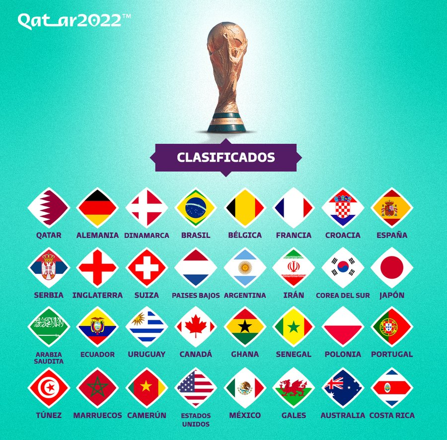

PAISES CLASIFICADOS
De esta manera, los países con un lugar en el Mundial son: Qatar (organizador); Alemania,Dinamarca, Francia, Bélgica, Croacia, España, Serbia, Inglaterra, Suiza, Países Bajos, Portugal, Polonia Y Gales (Europa); Brasil, Argentina, Uruguay y Ecuador (Sudamérica), Canadá, México, Estados Unidos y Costa Rica (Concacaf), Irán, Corea del Sur, Japón, Arabia Saudita y Australia (Asia), Ghana, Senegal, Túnez, Marruecos yCamerún (África). Queda un cupo disponible que se resolverá este martes.
